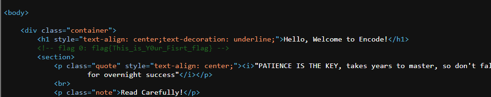

What is CTF in terms of cybersecurity ?
Capture the Flag (CTF) in computer security is an exercise in which "flags" are
secretly hidden in purposefully vulnerable programs or websites. Don't worry here you don't need to
hack any application these CTFs are very easy and made to give you a glimpse of actual CTF. These
Labs are made focusing on the knowledge of our participants.
Types of CTF:
- Jeopardy CTF / Red-Team
- Attack & Defense CTF / Red-Team-Blue_team
How to play ?
You are given 5 Labs to solve. Hints are available in every lab, read properly
whatever hints are given. Difficulty will increase as you go on solving labs. Google along with
other online sites will help you to capture the flag. your googling skills matter during the
competition. The first two labs will be easy and you will be guided in these 2 labs but next 3 labs
you have to do yourself with hints available or with your thinking capabilities.
Dos and Don'ts (Rules of the CTF)
- Any Participants are not allowed to leave their place without permission during the competition.
- Participants are allowed to use Google or any other sites during the competition.
- If anyone is seen helping other teams or sharing information then both teams will be banned from
the competition.
Are you Ready for Hacking ?
I hope you are ready now, I am really excited. Let's Begin
Things to do whenever you first visit lab(site).
- Read whatever is written on the site. That can be either hints for you or the way to approch the
flag.
- If you don't find any hint in the site then look into the source code of a website.You can do it
by pressing CTRL+U or Right Click on a webpage and select view page source.
- Don't be overwhelmed by seeing code it is just HTML code. there you will see an
HTML comments or something else that is a hint for you or a flag. (you will
see HTML comments are in green color while viewing it from a browser)

Congratulations !! for getting your first flag. Submit
your first flag and
get points
- While reading source code check upto bottom because sometimes flag/hints is hidden bottom of the
code.
First Flag:
- From Instagram Latest Post you can find the first half flag from there and the second half flag you can find
from this webpage ,Click Here
Second Flag:
- On November 6, 2010, how many followers did Elon Musk have on his Twitter account?
- You need to do Passive Reconnaissance from ,Click Here
- You can google how to search anything in the internet archive
Third Flag:
- flag is hidden on this page; if you can get it, then submit it. (to find the flag, you need good
knowledge of CSS. open style.CSS, then find the clue.)